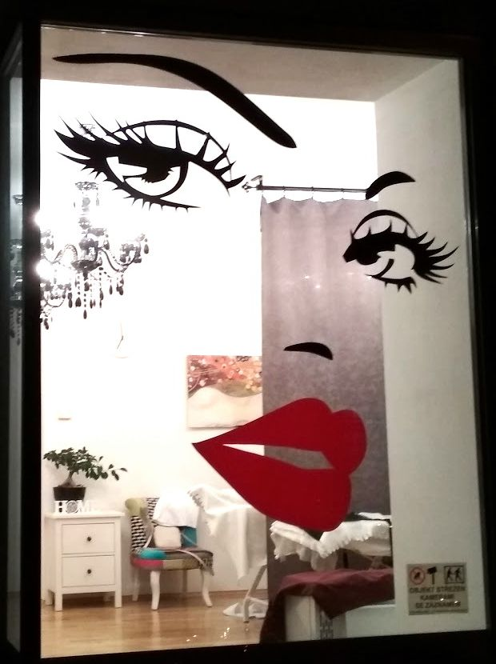
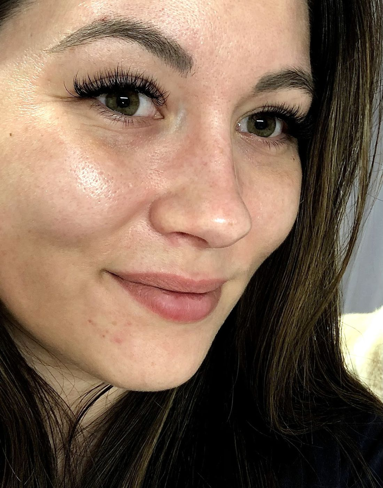
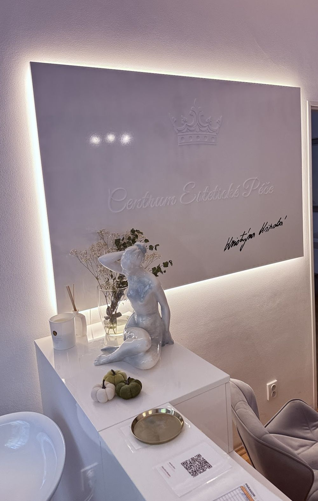
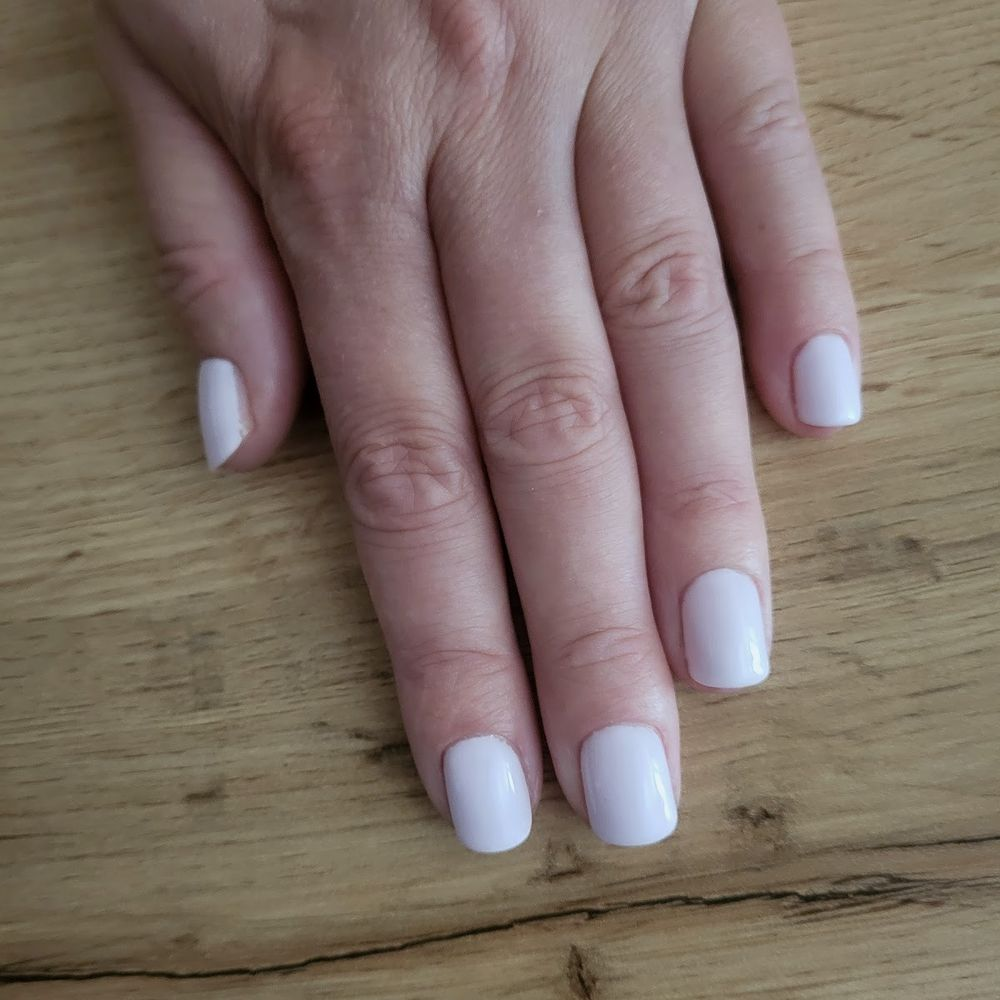
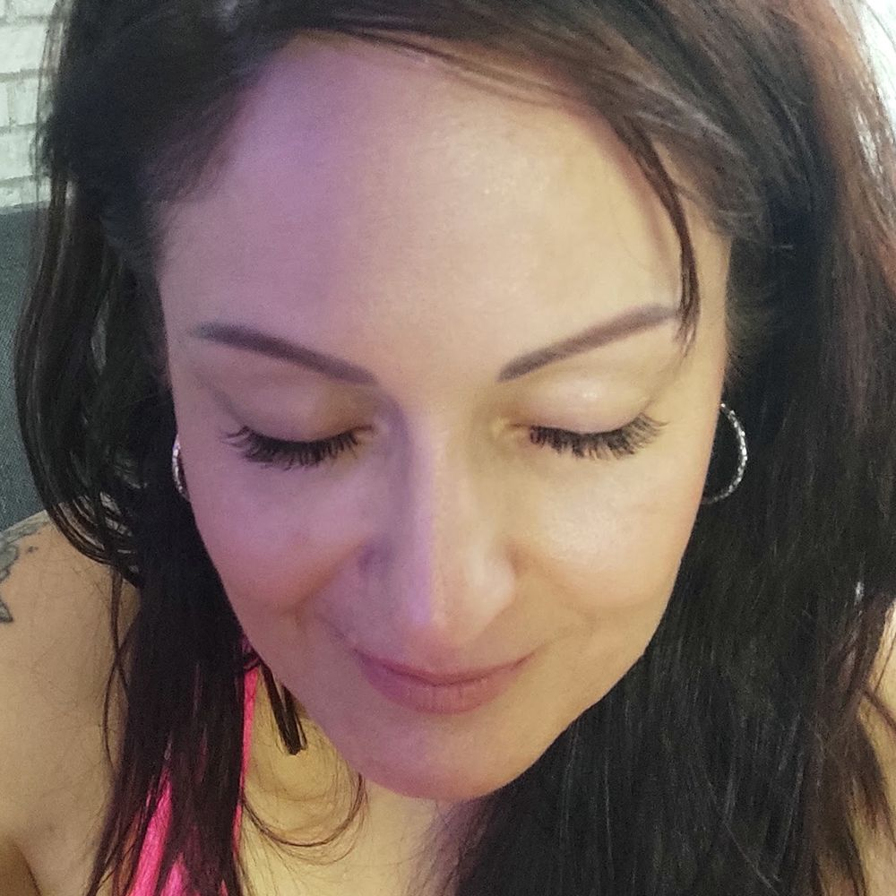
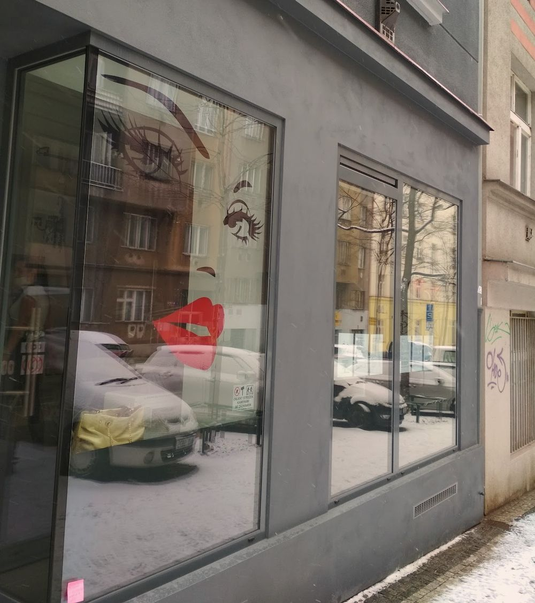

Centrum Estetické Péče
Český kosmetický salon na Žižkově. Kosmetika, řasy, obočí, nehty, pedikúra a masáže.
Po–Čt 8:00–20:00, Pá 8:00–12:00
4,8 ze 147 hodnocení na Googlu
Služby
Manikúra
„Nehtíky jsou precizně zpracované do posledního detailu a je vidět, že svou práci dělají s láskou a maximální pečlivostí.“
Lucie
Pedikúra
„Dnes jsem byla v tomto salonu na pedikúře a manikúře a jsem nadmíru spokojena! Dámy, které o mě pečovaly, byly velmi milé a hlavně ve své práci pečlivé a precizní. Nebyl problém, když jsem s sebou měla půlroční dceru, což také velmi oceňuji!“
Karolína
Kosmetika
„Už přes tři roky chodím pravidelně na kosmetiku ke Kristýnce a jsem víc než spokojená. Zachránila mi pleť, pokaždé je ošetření na míru podle aktuálních potřeb.“
Andrea
Masáže
Prodlužování řas
„K paní majitelce chodím víc jak 15 let. Maximální spokojenost, nádherné řasy, které mi všichni pokaždé moc chválí.“
Yvona
Obočí a řasy: úprava, barvení, laminace
„Chodím pravidelně na řasy a byla jsem i na obočí. Velká spokojenost. Krásné prostředí, milý a vstřícný kolektiv salonu.“
Mirka
Permanentní make-up obočí
„Byla jsem zde na předělávce obočí, kdy jsem měla špatný tvar z jiného salonu. PMU obočí mi dělala majitelka Kristýnka. Jsem nadšená jejím přístupem a profesionalitou.“
Martina
Termín si domluvíte po telefonu na 602 402 991. Platí se hotově. Vstup je bezbariérový.

Dlouho jsem hledala salon, kde se domluvím česky. … Hezké prostředí a moc šikovné holky.
Kamila


Velmi oceňuji individuální a citlivý přístup. Už se těším na další návštěvu, tentokrát na kosmetiku.
Eliška

Kde a kdy

Centrum estetické péče
Zelenky-Hajského 1727/3
Praha 3, Žižkov
| pondělí | 8:00–20:00 |
| úterý | 8:00–20:00 |
| středa | 8:00–20:00 |
| čtvrtek | 8:00–20:00 |
| pátek | 8:00–12:00 |
| sobota | zavřeno |
| neděle | zavřeno |
Platba pouze hotově.
Bezbariérový vstup.
Objednejte se prosím předem.
Zelenky-Hajského 1727/3, Praha 3, Žižkov. Kousek od Basilejského náměstí.